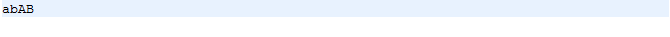
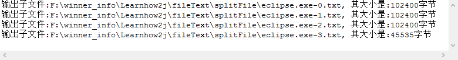
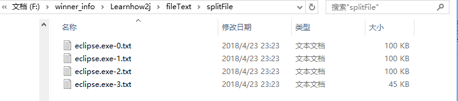
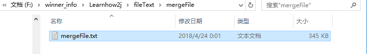

#流
什么是流？
流是一个抽象的概念，是一组具有方向性的字节集合，是对数据传输的总体或抽象。数据在输入设备和输出设备之间的传输称之为流。设备可以是文件、网络、内存等。
处理的数据单位不同，可分为：字符流，字节流
数据流方向不同，可分为：输入流，输出流
字节流
1.以字节流的形式读取文件内容
InputStream 是字节输入流，同时也是抽象类，只提供方法声明，不提供方法的具体实现。
FileInputStream 是InputStream子类，以FileInputStream 为例进行文件读取
###ASCII码 概念
所有的数据存放在计算机中都是以数字的形式存放的。 所以字母就需要转换为数字才能够存放。
比如A就对应的数字65，a对应的数字97. 不同的字母和符号对应不同的数字，就是一张码表。
ASCII是这样的一种码表。 只包含简单的英文字母，符号，数字等等。 不包含中文，德文，俄语等复杂的。
1 | public static void main(String[] args) { |
输出结果：
2. 以字节流的形式向文件写入数据
OutputStream是字节输出流，同时也是抽象类，只提供方法声明，不提供方法的具体实现。
FileOutputStream 是OutputStream子类，以FileOutputStream 为例向文件写出数据
1 | public static void main(String[] args) { |
注: 如果文件 outputStream.txt不存在，写出操作会自动创建该文件。
但是如果是文件 F:/xyz/outputStream.txt，而目录xyz又不存在，会抛出异常
outputStream.txt 文件内容：

练习-拆分文件
找到一个大于100k的文件，按照100k为单位，拆分成多个子文件，并且以编号作为文件名结束。
比如文件 eclipse.exe，大小是309k。
拆分之后，成为
eclipse.exe-0
eclipse.exe-1
eclipse.exe-2
eclipse.exe-3
解题思路分析
文件拆分的详细步骤
- 1.创建文件对象、设置拆分文件的大小
- 2.判断文件是否可以分割，将文件的内容读取到字节数组中
- 3.计算文件按要求可拆分的数量
- 4.遍历，设置拆分后的文件名、获取文件的路径，以此创建拆分后的文件对象
- 5.将源文件的内容截取出来存放到拆分后的字节数组中
- 6.将截取后的内容存放到设置的文件对象中
1 | public class SplitFile { |
输出结果：

拆分后的文件目录如下：

练习-合并文件
把上述拆分出来的文件，合并成一个原文件。
1 | /* |
输出结果：
合并后的文件：
